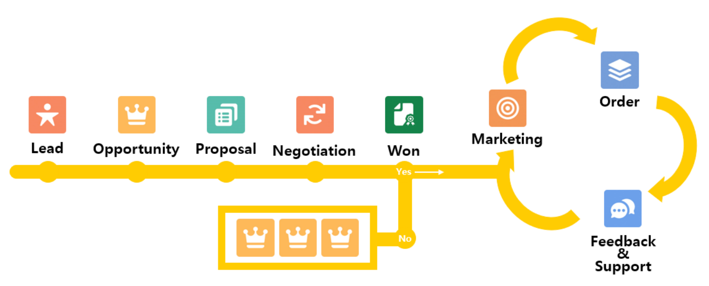

Sales Cloud

- 마케팅 영역
- Lead ( 잠재 고객 ) 단계 :
- Opportunity ( 기회 ) 단계 : 고객의 도입 의사와 상관없이 일정이 명확하게 존재 해야하며, 세일즈 클라우드의 가장 핵심이다.
- Proposal ( 제안 ) 단계 :
- Negotiation ( 협상 ) 단계 :
- Closed Won & Lost ( 결과 ) 단계 :
- Marketing Cloud
- MCAE
- MCA
App Object Tab
lead ( 잠재 고객 )
- Activity ( 활동 )
- 새 작업 : 종료 일시만 존재 하는 경우
- 새 이벤트 : 시작일시와 종료 일시가 존재하는 경우 (시작일시가 끝나면 화면에서 밑으로 내려온다)
- 리드 상태
Opportunity ( 기회 )
- Activity ( 활동 )
- 새 작업 : 종료 일시만 존재 하는 경우
- 새 이벤트 : 시작일시와 종료 일시가 존재하는 경우 (시작일시가 끝나면 화면에서 밑으로 내려온다)
Account ( 계정 )
- Activity ( 활동 )
- 새 작업 : 종료 일시만 존재 하는 경우
- 새 이벤트 : 시작일시와 종료 일시가 존재하는 경우 (시작일시가 끝나면 화면에서 밑으로 내려온다)
Chatter ( 사내 메신저 )
- 사내 메신저 : 작업자들끼리 업무 공유
- @이름으로 검색하여 특정 대상자에게 알림을 보낼 수 있습니다.
- chatter 게시에서 / 사용하면 레코드를 불러 올 수 있다.
- 스트림 기능으로 알림을 받고자 하는 모든 레코드를 그룹화 할 수 있습니다.
Contact ( 연락처 )
- 유사한 항목 병합
Group ( 그룹 )
- Chatter의 특정 목정에 의한 그룹화 (단톡방)